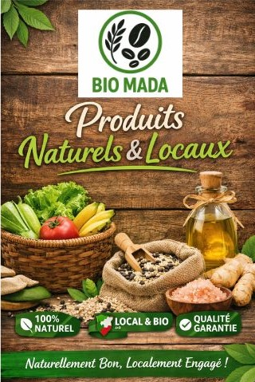
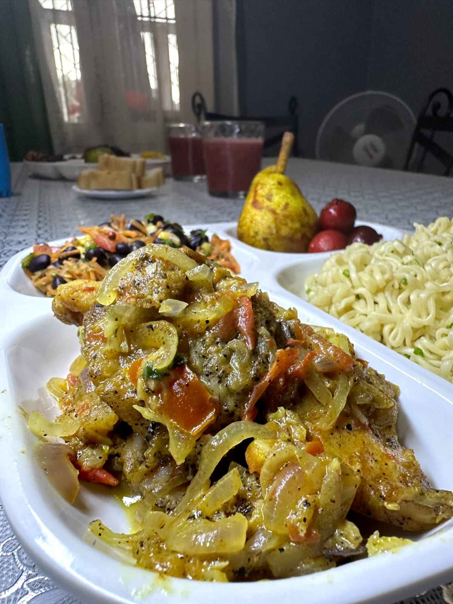
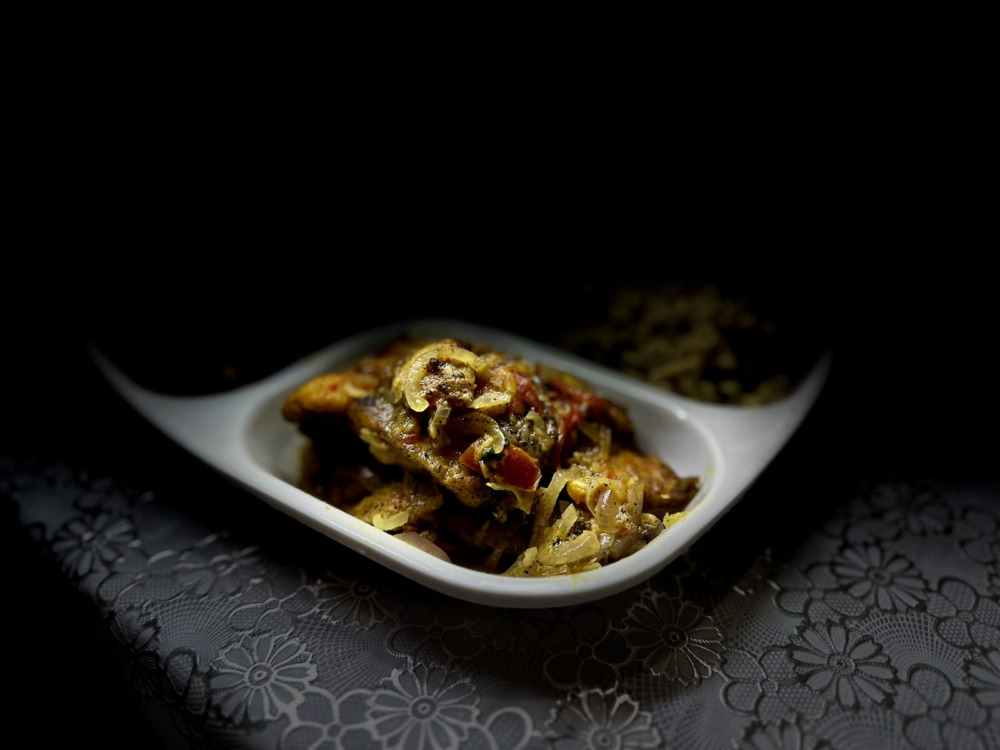
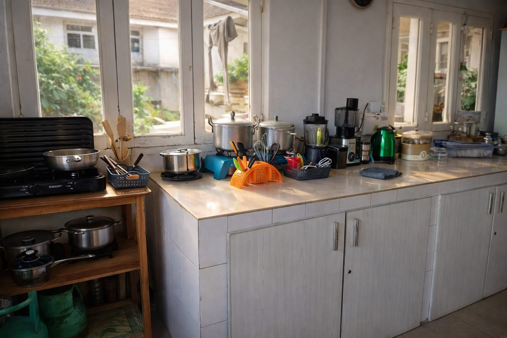
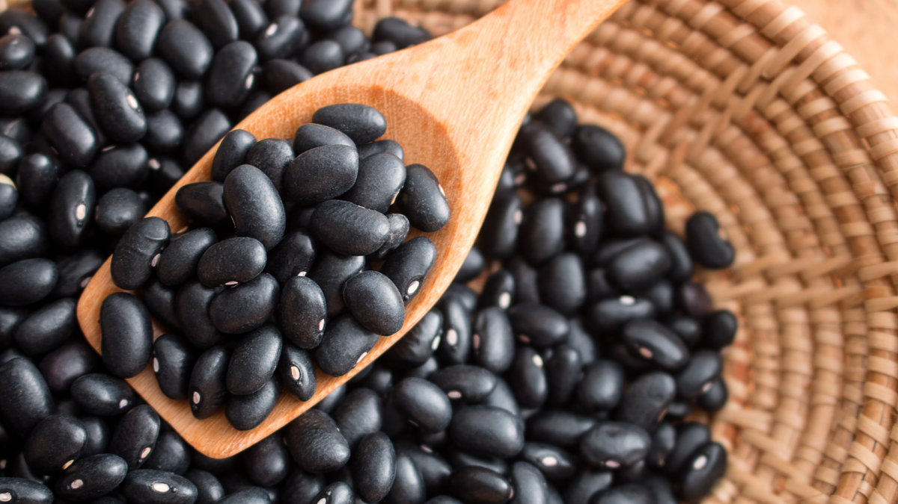

BIO MADA
Une alimentation naturelle et saine, de qualité premium, fièrement malgache

BIO MADA – Du terroir à l’assiette santé
Produits locaux malgaches • Service traiteur santé • Qualité premium
riz noir et haricots noirs issus de collaborations directes avec des producteurs locaux à cuisiner chez vous ou à commander prêts à déguster grâce à notre service traiteur BIO MADA Sakafo.
BIO MADA Sakafo propose des produits alimentaires naturels et un service traiteur santé, élaborés à partir de produits locaux de Madagascar, pour bien manger au quotidien et lors de vos événements.
👉 Mangez bien. Mangez sainement. Mangez BIO MADA.

Notre objectif


Nous vous proposons des Plats délicieux • sains • de qualité
Notre objectif est clair : Offrir des plats et produits naturels malgaches riz noir, haricots noirs et autres spécialités délicieux, sains et gourmands, qui mettent en valeur le savoir-faire malgache tout en répondant aux standards de qualité actuels, aussi bien pour vos repas du quotidien que pour vos événements et réceptions.
À travers BIO MADA Sakafo, nous vous proposons des plats malagasy uniques, alliant tradition, qualité et savoir-faire local.
Nos services
Des produits naturels et locaux, transformés en nourriture saine et premium.
BIO MADA valorise les produits naturels et locaux de Madagascar — du produit brut à l'assiette préparée.
Produits bruts premium (BIO MADA) :
Service traiteur – BIO MADA Sakafo :
BIO MADA travaille avec des producteurs et coopératives locales pour garantir qualité, traçabilité et impact social durable.


